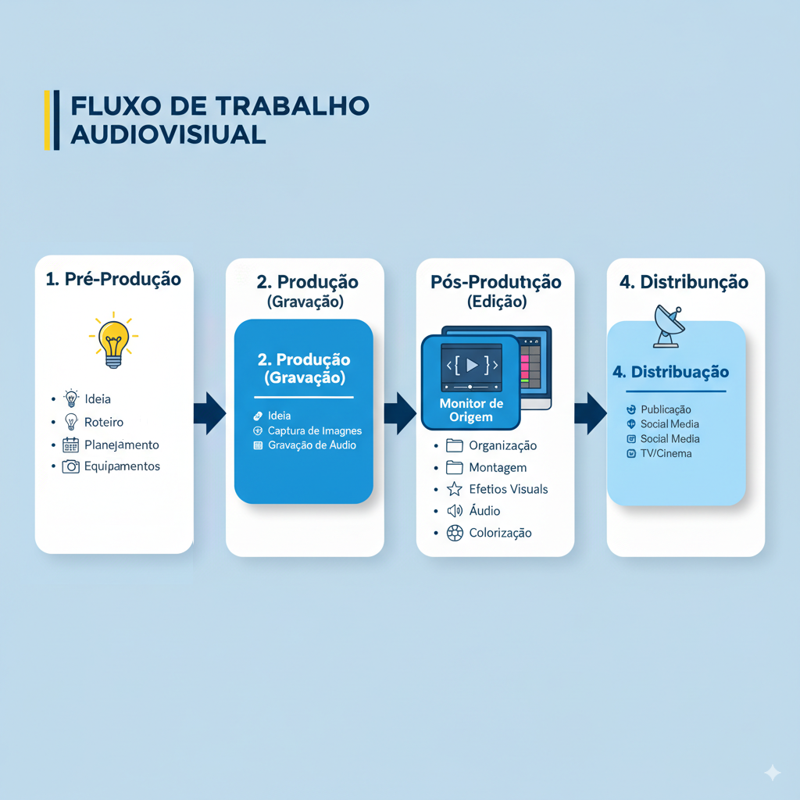
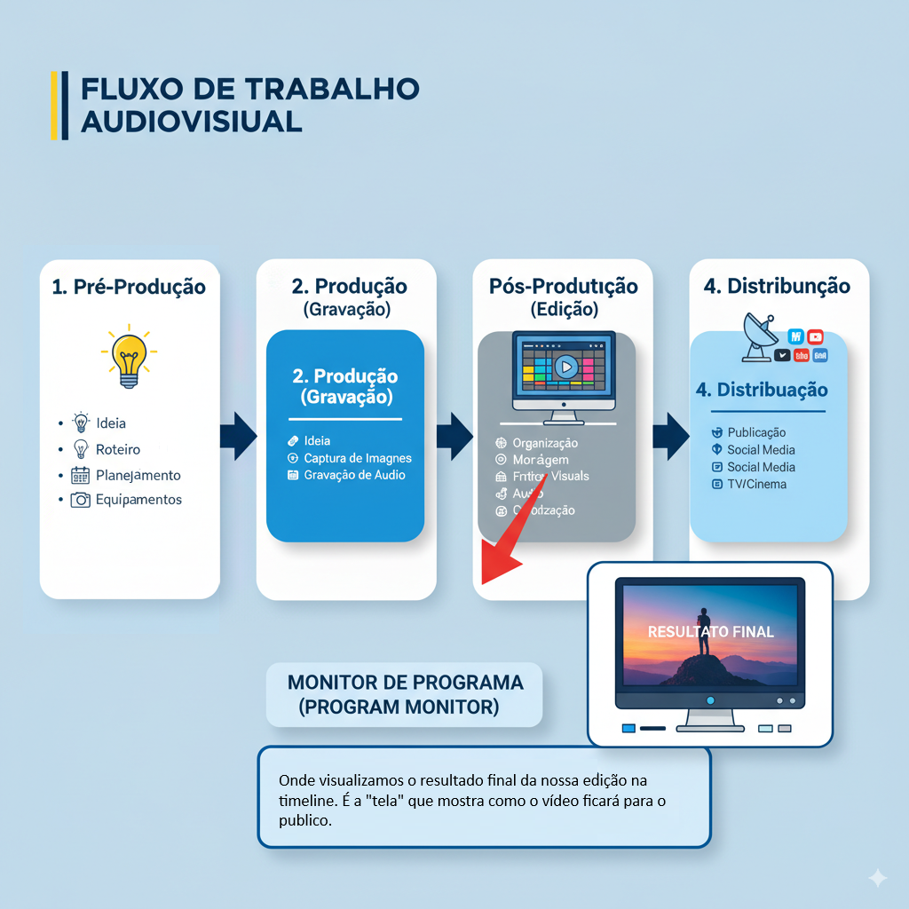

Voltar
Aula 1: Introdução e Primeiros Passos na Edição
Objetivos de Aprendizagem:
Ao final desta aula, os alunos serão capazes de:
- Compreender o papel do editor de vídeo e o fluxo de trabalho básico de uma produção audiovisual.
- Identificar as principais áreas da interface de um software de edição.
- Importar diferentes tipos de mídias para um projeto.
- Organizar o projeto de forma eficiente.
Parte 1:Introdução
O Que é ser um Videomaker/Editor de Vídeo?
- Definição: Um profissional que dá forma e narrativa a gravações brutas. Transforma
clipes soltos em uma história coesa e impactante.
- Não é só cortar e colar: É contar uma história, criar emoção, informar, persuadir.
- Habilidades essenciais: Olhar crítico, criatividade, organização, paciência,
conhecimento técnico.
- Áreas de atuação: Cinema, TV, publicidade, mídias sociais, eventos, documentários,
corporativos, etc.
O Fluxo de Trabalho de Produção Audiovisual
Parte 2: Visão Geral do Software de Edição
Introdução ao Software de Edição
- Qual software será usado no curso (ex: Adobe Premiere Pro ou DaVinci Resolve).
- Conceito: O software é nossa "mesa de trabalho" digital.
Interface Principal: Painéis e Janelas
- Conceito: A interface é dividida em diferentes áreas, cada uma com uma função
específica.
- Demonstração prática no software, explicando cada painel principal:
- Painel de Projeto (Project Panel/Media Pool): Onde importamos e organizamos
todos os nossos arquivos (vídeos, áudios, imagens, gráficos). É como uma pasta de arquivos.
Exemplo de um Painel de Projeto (Project Panel/Media Pool).
- Monitor de Origem (Source Monitor): Onde visualizamos os clipes individuais
antes de colocá-los na timeline. Usado para marcar pontos de entrada (In) e saída (Out).

Exemplo de um Monitor de Origem.
- Timeline (Sequence Panel): O coração da edição! É onde montamos a sequência
do vídeo, organizando os clipes em ordem, adicionando áudio, transições e efeitos.
Exemplo de uma Timeline (Sequence Panel).
- Monitor de Programa (Program Monitor): Onde visualizamos o resultado final
da nossa edição na timeline.

Exemplo de um Monitor de Programa.
- Outros painéis importantes (breve menção): Efeitos, Áudio Mixer, etc.
Configuração do Projeto e Sequência
- Conceito de Projeto: O arquivo principal que guarda todas as informações sobre a
sua edição.
- Conceito de Sequência: A "linha do tempo" específica onde você monta o seu vídeo.
Um projeto pode ter várias sequências.
- Demonstrar como criar um novo projeto e uma nova sequência, explicando as configurações básicas
(resolução, taxa de quadros - frame rate).
- Importante: Salvar o projeto regularmente!
Parte 3: Captura, Importação e Organização
Tipos de Mídia no Contexto da Edição
- Conceito: Vídeos, áudios (músicas, voz, efeitos), imagens (fotos, gráficos), etc.
- Formatos Comuns: MP4, MOV, WAV, MP3, JPG, PNG. Breve explicação sobre codecs (não
aprofundar muito, só o básico).
- Importância da Qualidade: Mídias de boa qualidade facilitam a edição.
Importação de Mídias
Organização do Projeto
Parte 4: Exercício Prático e Dúvidas
Exercício Prático
Cada aluno deve:
- Abrir o software de edição.
- Criar um novo projeto e uma nova sequência.
- Importar um conjunto de mídias (uma pasta com vídeos curtos, alguns arquivos de áudio e algumas
imagens).
- Criar pastas ("bins") no Painel de Projeto (ex: "Videos Brutos", "Audios", "Imagens") e
organizar as mídias importadas nelas.
- Salvar o projeto.
Voltar